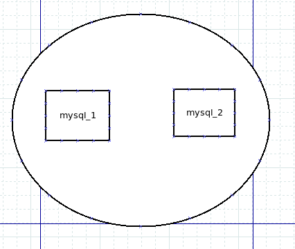

My love for Docker eclipses my love for Vim
Just like Vim has made me rethink how I use my keyboard…
Docker has made me rethink how I run programs!
There are several problems with running computer programs that you may or may not have encountered
What is a program?
You have a binary file and can run the binary file
Let’s start with Hello World
Let’s start with Hello World in C++…
#include <iostream>
int main() {
std::cout << "Hello world!" << std::endl;
}
FROM ubuntu
CMD echo "Hello world!"
…what?
“The FROM instruction initializes a new build stage and sets the Base Image for subsequent instructions”
“The main purpose of a CMD is to provide defaults for an executing container”
We just skip loading the kernel and replace the init program!
Each virtual machine gets its own:
Can we emulate anything like that for other programs? Something more… performant?
How is it that Linux computers work? How do they boot?
Condensed version: a bootloader runs the kernel, and the kernel runs a program, the init program
What is the init program?
What happens if you replace this init process with something else, something trivial like echo Hello World!?
What kind of containing can we do with the Linux kernel?
The Linux kernel has the following namespaces:
No changes you make are saved
Actually, no!
For GUI applications: Snapcraft and Flatpak
For CLI applications/services: containerd.io, podman, Fedora toolbox
A container is a program running in namespaces that are defined as smaller than the host system, and runs in an execution environment as defined by the base image and runtime parameters
Where does Docker fit in?
Relative to containerization, Docker is simple
Docker is a service/daemon for configuring and running containerized applications as well as the interface to said daemon
We can create a network with docker network create [NAME] and attach it to containers made with docker run using --network
After creating the network, we can make containers which can connect to the network and make themselves available to other containers in that network, and only other containers in that network.
Quick aside: make sure your Docker container exposes only to the network you want it to!
Volumes are where things get interesting, as they provide a way for containers to interact with filesystems outside their own
They are mounted by using -v [volume-name]:[mount-point] with docker run
There are two primary volume types to worry about: Docker volumes, and bind mounts
A special data structure which can be managed by the Docker daemon for you, and their paths look like the volume name
What if we could just take a folder on our host systems and make it available inside the docker container?
On top of allowing services to run, Docker also provides multiple management interfaces to manage containers
Docker can be very simple. But its usage and implications can become very complex, very fast
’Nuff said
Do you remember where we specified the user in the earlier commands?
We didn’t! It defaults to root!
If someone has access to the Docker daemon, they can create containers with the root user if they so desire!
Essentially, if someone tells you, “I have access to the Docker daemon, but I’m not root”, they are lying or don’t understand Docker
What kind of sockets are there?
/var/run/docker.sock)/tmp/.X11-unix)/tmp/ssh-xxxxxxxxxxxx/agent.xxxx)
Have you heard of chroot?
If a Docker container isn’t configured properly, using chroot you can gain access to your host
Why? Because running Docker commands ourselves is too difficult and boring
It’s a jump from “virtual machines” to “networks of virtual machines”
Docker compose allows defining a docker-compose.yml service file
version: '3.8'
services:
mysql:
image: mysql
expose:
- '3306'
webapi:
image: your_company_webapi
environment:
- DB_HOST=mysql
What’s the difference between these two configurations:
version: '3.8'
services:
mysql_1:
image: mysql
expose:
- '3306'
mysql_2:
image: mysql
ports:
- '3306:3306'
expose and ports?
Kubernetes (k8s) is a program where you tell the Kubernetes API server: “create containers in this configuration”
apiVersion: v1
kind: Pod
metadata:
namespace: unitplannerv7
name: mysql
labels:
name: mysql
spec:
containers:
- image: mysql:8.0.26
name: mysql
env:
- name: MYSQL_ROOT_PASSWORD
valueFrom:
secretKeyRef:
name: mysql-password
key: password
ports:
- containerPort: 3306
name: mysql
volumeMounts:
- name: mysql-persistent-storage
mountPath: /var/lib/mysql
volumes:
- name: mysql-persistent-storage
hostPath:
path: "/var/lib/mysql"
Remember when we mentioned that if someone has access to the Docker daemon, they can create containers as any user, to include root?
This may sound incredibly obvious, but…
Kubernetes has access to the Docker daemon!
By proxy, if someone has access to the Kubernetes API server, they have access to the Docker daemon
Create a MySQL database with the root password “toor” and exposed on port 3306
Winner is defined as the first person that I can connect to using MySQL and run SELECT 1+1;